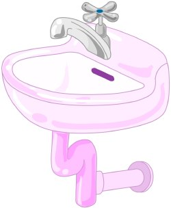

- 40 L. Wasser für das Baden oder Duschen
- 30 L. Wasser für das Waschen der schmutzigen Wäsche
- 30 L. Wasser beim Gang auf die Toilette
- 13 L. Wasser für die Körperhygiene
- 12 L. Wasser beim Geschirr spülen
- 12 L. Wasser für die Bewässerung der Garten- und Zimmerpflanzen.
Menschen von 20 Liter auf 140 Liter gestiegen